AI Agent & Web3 Builder. Creating onchain reputation systems, AI-powered tools, and foodtech solutions — starting with Africa.
Explore
Food-tech compliance and sourcing, careers, research and negotiation. Try them live.
Open AI Agents → 02 · Web3Payments, tickets and portfolios on Sui and more, plus AI agents that live on-chain.
Open Web3 → 03 · WritesThe newsletter: AI, Web3 and founder playbooks, in five minutes.
Open Writes → 04 · BuildsMotion-rich landing pages, plus short-form vertical clips with animated captions.
Open Builds →Building With
Projects
AI agents, Web3 protocols, foodtech tools, and content — shipping across the stack.
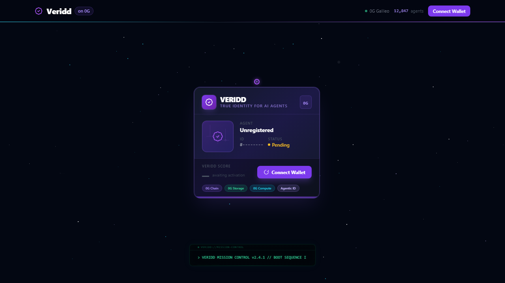
Onchain reputation score for AI agents. Built on 0G with Agentic ID (ERC-7857), peer review via 0G Compute, and immutable action logs on 0G Storage. Every agent gets an onchain identity, every action is verified immutably.
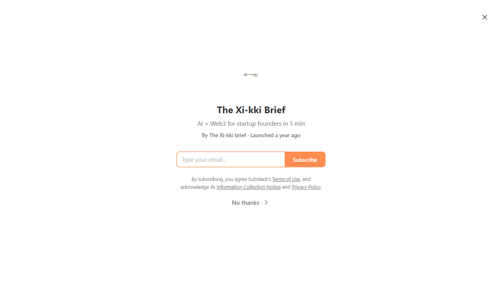
Future-proof your startup with AI + Web3 in 5 minutes. Weekly insights on AI agents, blockchain, DeFi, and foodtech — written for African builders and global innovators.
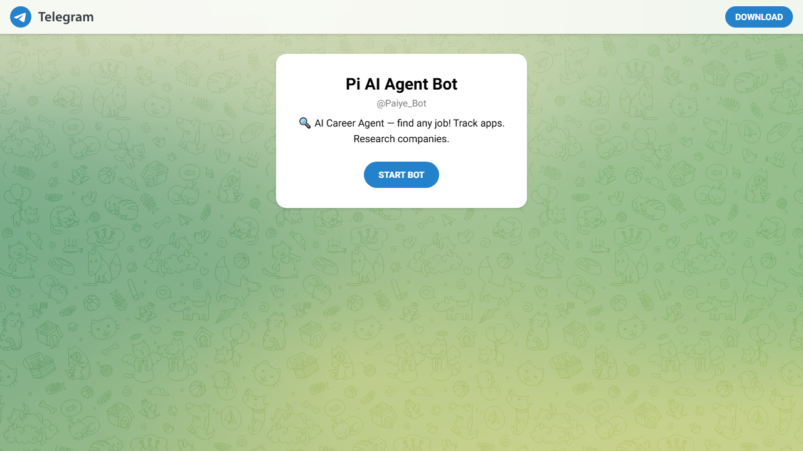
Personal job match engine for remote roles open to Nigeria. Scrapes 5+ job boards, scores matches against your resume with AI confidence ratings, and delivers daily alerts at 7AM WAT.
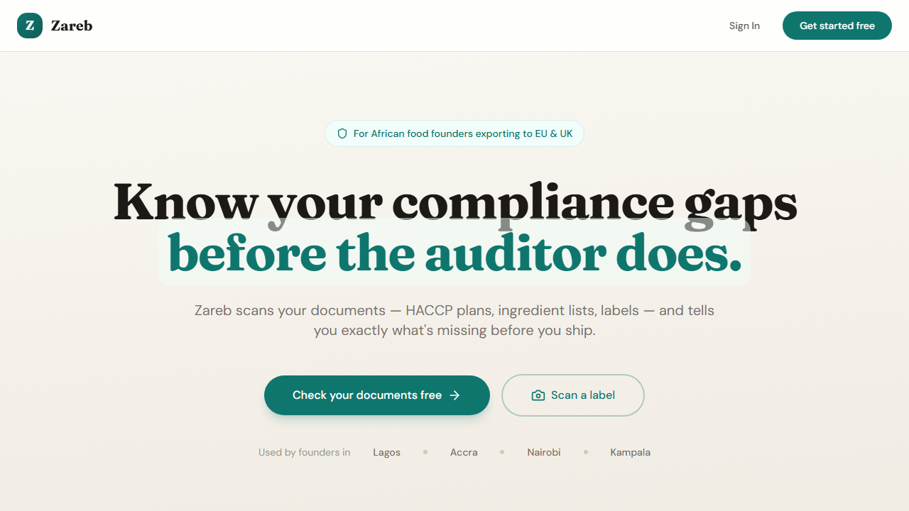
AI compliance document checker for African foodtech founders exporting to EU/UK markets. Scans regulations, flags gaps, and generates remediation plans.
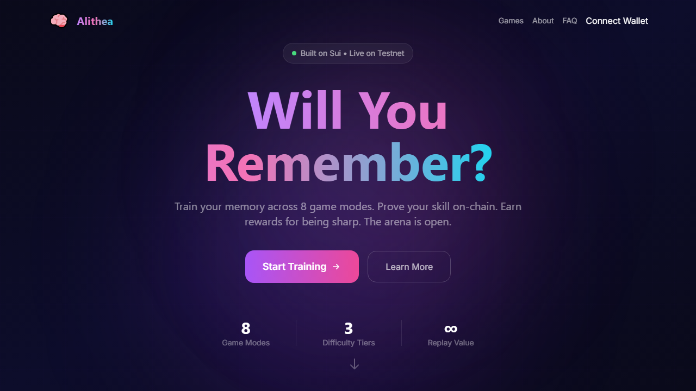
Memory training arena with 10 game modes on Sui blockchain. Compete on cognitive speed, testnet leaderboards, and play-to-earn rewards powered by Move smart contracts.
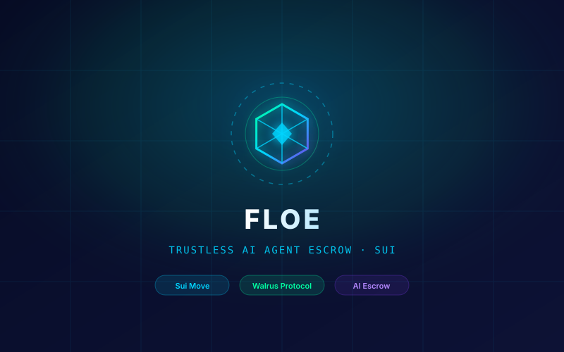
Trustless AI Agent Escrow and autonomous service registry on Sui. Programmable milestone validation, Walrus storage anchoring, and seamless Sui settlement for agent-to-agent contracts.
Calm, patient Web3 onboarding AI agent with sovereign memory on Walrus Protocol. zkLogin via Sui, pre-flight safety scanning, step-by-step guidance, and NotebookLM-style study tools (mind maps, flashcards).
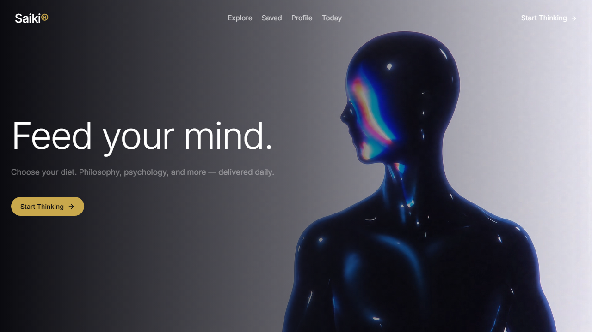
Daily philosophy & psychology tips — a progressive web app delivering wisdom from great thinkers. Installable, offline-ready, and beautifully minimal.
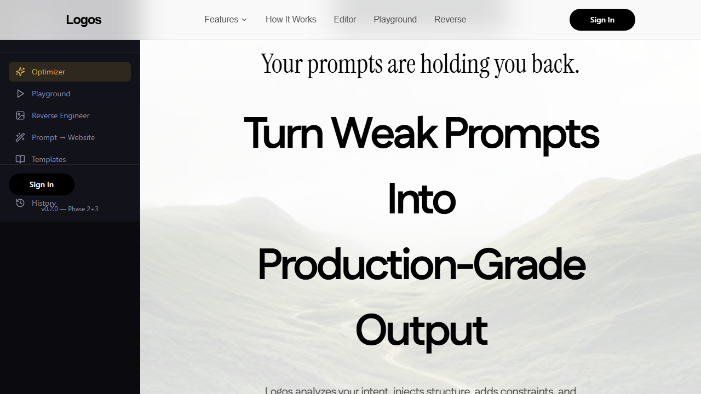
Prompt engineering platform — optimize prompts across 5 modalities (text, code, image, video, audio), reverse-engineer any media into prompts, and generate production-ready websites from descriptions. Powered by Groq AI.
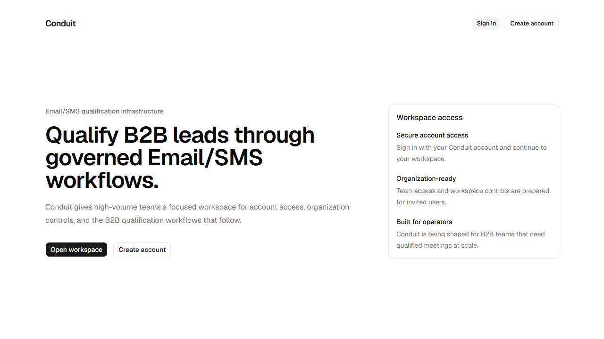
Decentralized ticket & event management on Sui. Create events, sell tickets as NFTs, and verify attendance on-chain — no middlemen, no scalping.
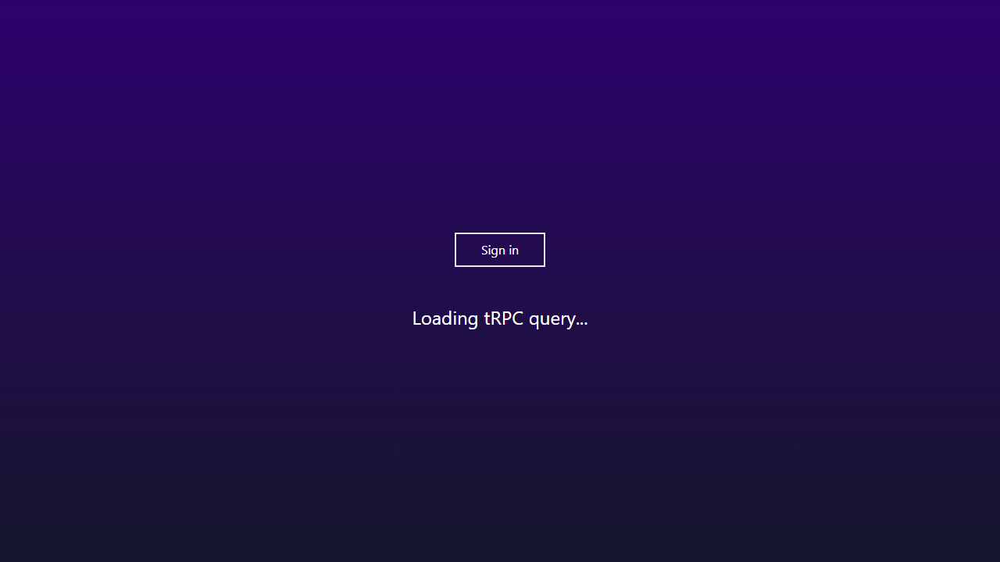
Learn-to-earn quiz platform on ICP — answer questions, earn tokens, track progress. Gamified education meets blockchain incentives.
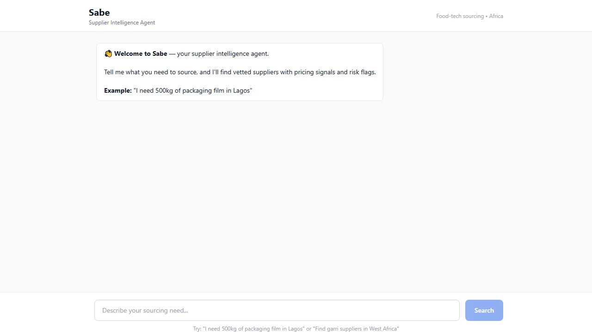
AI supplier sourcing agent for African food-tech founders — find verified suppliers, compare prices, and negotiate deals with AI-powered recommendations.
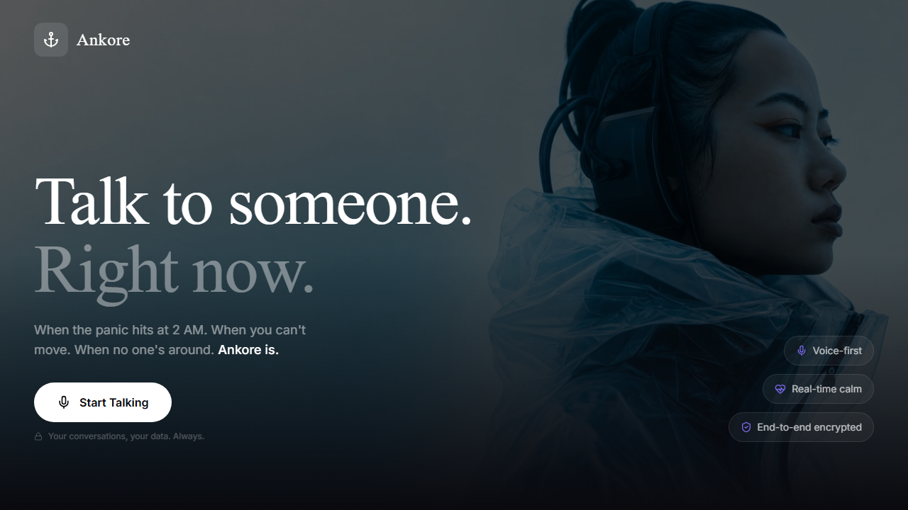
Voice-first AI wellness companion — "Someone's Always Here." Talk to a compassionate AI that listens, responds with natural voice, and supports your mental health.
AI-powered cross-platform bookmarking — save links from anywhere, auto-tag with AI, search your entire web with natural language. Never lose a resource again.
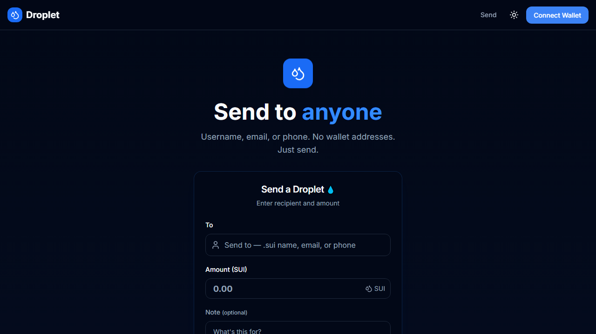
Send crypto like sending a message — no wallet addresses, just a name, email, or phone. Beautiful receipts, instant transfers on Sui with 2-second finality and on-chain escrow.
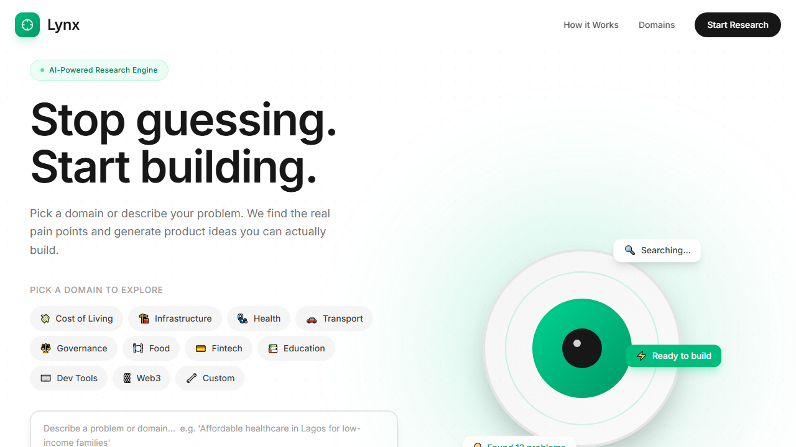
AI problem-to-product research engine — describe a problem, get a full product brief with market analysis, competitors, and MVP specs in seconds.
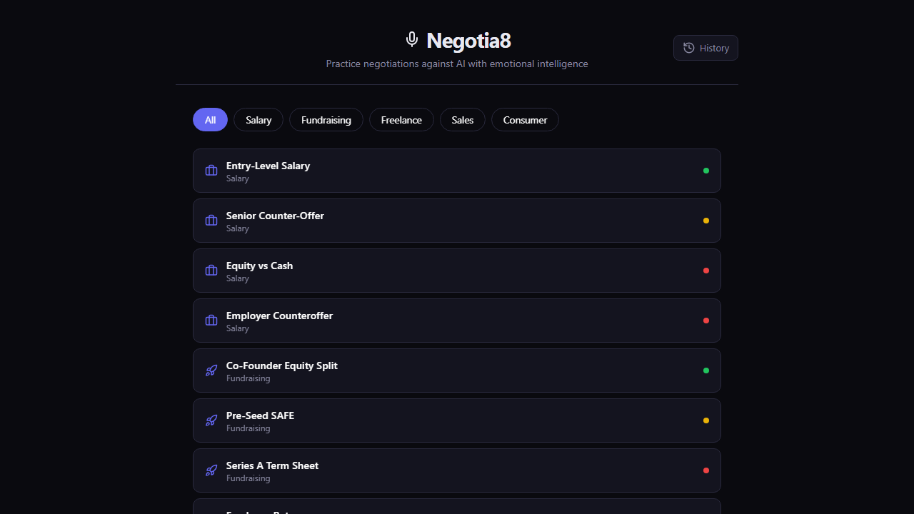
AI negotiation trainer with avatars — practice salary negotiations, business deals, and difficult conversations with AI-powered roleplay and real-time feedback.
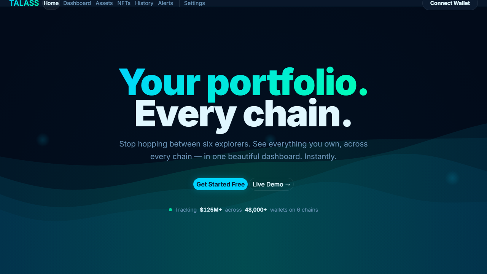
Web3 wallet portfolio dashboard — connect your Sui wallet, track assets, view transaction history, and monitor your DeFi positions in one clean interface.
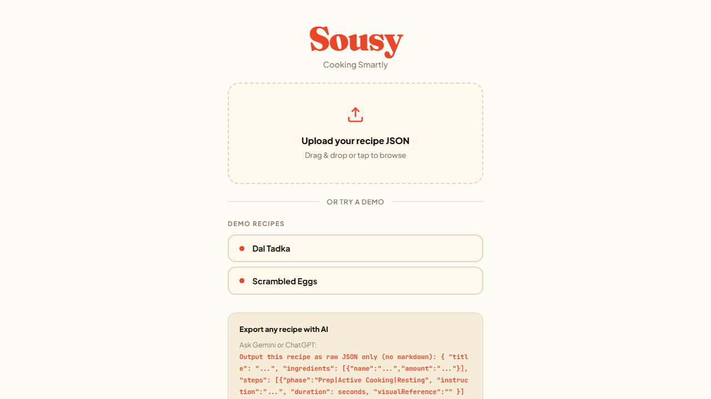
Voice AI for commercial kitchen inventory — speak your stock, get instant counts, reorder alerts, and waste tracking. Hands-free kitchen management.
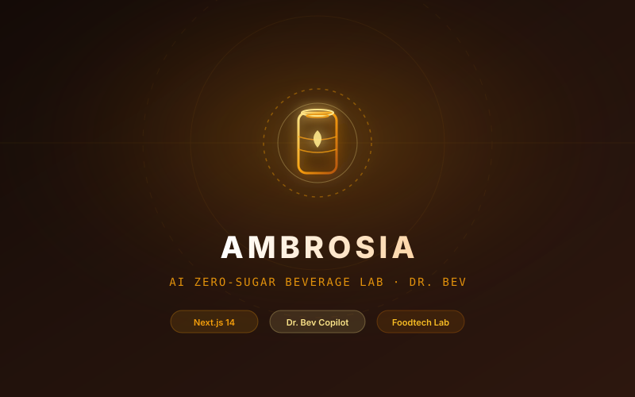
Zero-sugar beverage formulation brand and consumer foodtech laboratory powered by Dr. Bev (generative AI formulation copilot), interactive ingredient transparency lab, and e-commerce checkout.
About
I'm Adeleke Isaac (Xi-kki), a builder creating at the frontier of AI agents, blockchain protocols, and foodtech tools — with Africa as both my starting point and my focus market.
My work spans the full stack: from smart contracts in Solidity and Move, to AI-powered bots and job engines, to content that helps founders navigate AI and Web3. I believe the next wave of innovation will come from combining AI agency with onchain trust — and I'm building the primitives to make that happen.
I've shipped across 0G (VERIDD), Sui (Droplet, Gaid3, Alithea, Conduit, Floe), Telegram (@Paiye_Bot), and Substack (The Xikki Brief). My projects are driven by a single question: how can I build something useful today that compounds into infrastructure tomorrow?
Writing
AI + Web3 insights to future-proof your startup — in 5 minutes.
How Nigeria jumped from cowrie shells to cryptocurrency in one generation — and what it means for the future of money in Africa.
Read on Substack →Telegram's evolution from messaging app to Web3 powerhouse — TON, mini apps, and the path to mass adoption.
Read on Substack →A beginner's guide to Web3 wallets — what they are, how they work, and why every African builder needs one.
Read on Substack →Journey
From first commits to shipping for hackathons and building real products.
Built VERIDD, an onchain reputation system for AI agents using all 4 0G products — 0G Chain (Agentic IDs via ERC-7857), 0G Storage (immutable action logs with Merkle proofs), 0G Compute (peer review agents). Demo live at veridd.vercel.app.
Started a weekly Substack newsletter covering AI + Web3 for startup founders. 5 published posts, 47 notes in queue, auto-scheduler running through Sep 2026.
Telegram job match engine that scrapes 5+ remote job boards, scores matches against 3 resume profiles, and delivers daily alerts. 1K+ commands served.
Began building on Sui blockchain with Move language. Created Floe — trustless AI agent escrow with on-chain dispute resolution. Deep dive into Sui objects, PTBs, and zkLogin.
Built Zareb — AI compliance checker for African foodtech founders. Started foodtech AI agent projects and GTM playbook for the African market.
Began exploring prompt engineering, AI agents, and vibe coding. Built first AI-powered tools, discovered the power of AI-assisted development, and never looked back.
Contact
Open to collaborations, hackathons, speaking, or just a good conversation about AI agents and Web3.